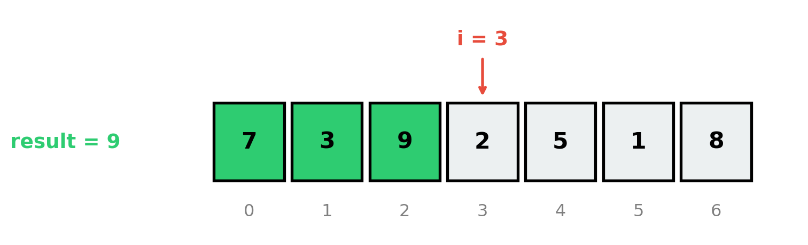
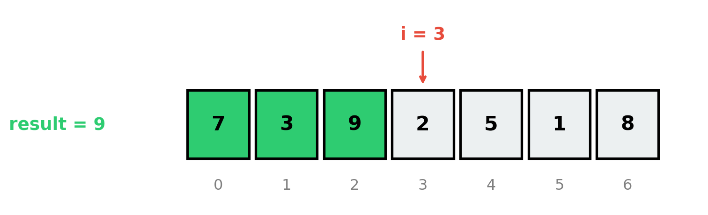
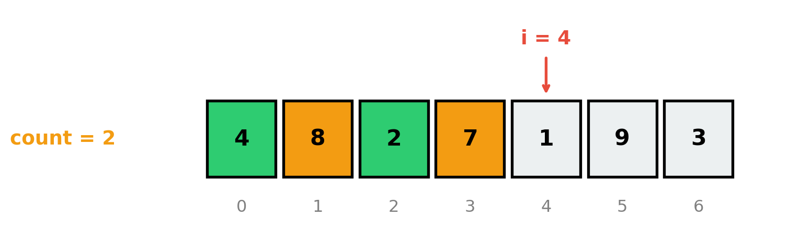
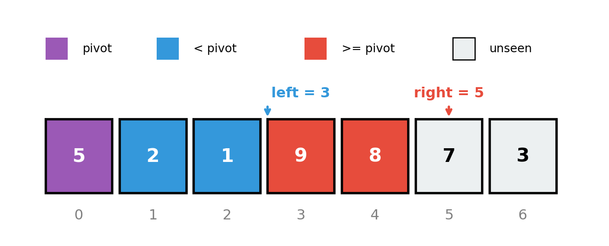

Week 3, Monday
January 19, 2026
An algorithm was running, but we paused it mid-execution.
Your job: figure out what it was doing and where it stopped.
| 0 | 1 | 2 | 3 | 4 | 5 | 6 |
|---|---|---|---|---|---|---|
| 7 | 3 | 9 | 2 | 5 | 1 | 8 |
Variables: result = 9
Q1: What iteration is i about to start?
Q2: What does result represent?

i = 3 (about to examine index 3)result = 9 = maximum of arr[0:3] = maximum of [7, 3, 9]The Invariant: At iteration \(i\), result holds the maximum of arr[0:i].
The invariant tells us:
result = max of arr[0:1] = max of [7] = 7 ✓result = max of arr[0:2] = max of [7, 3] = 7 ✓result = max of arr[0:3] = max of [7, 3, 9] = 9 ✓The frozen state is consistent with the invariant at i = 3.
| 0 | 1 | 2 | 3 | 4 | 5 | 6 |
|---|---|---|---|---|---|---|
| 4 | 8 | 2 | 7 | 1 | 9 | 3 |
Variables: count = 2
Q1: What iteration is i about to start?
Q2: State the invariant.

arr[0:4] = [4, 8, 2, 7]: 8 and 7 → count = 2i = 4The Invariant: At iteration \(i\), count equals the number of elements > 5 in arr[0:i].
Original: [5, 8, 2, 9, 1, 7, 3]
| 0 | 1 | 2 | 3 | 4 | 5 | 6 |
|---|---|---|---|---|---|---|
| 5 | 2 | 1 | 9 | 8 | 7 | 3 |
pivot = 5, left = 3
Q1: What iteration is right about to start?
Q2: Describe what’s in arr[1:left] and arr[left:right].

right = 5 (about to examine index 5, which has value 7)arr[1:left] = arr[1:3] = [2, 1] — all < pivot (5)arr[left:right] = arr[3:5] = [9, 8] — all >= pivot (5)The Invariant (at iteration right):
arr[1:left] contains elements < pivotarr[left:right] contains elements >= pivotarr[right:] is unexaminedLook at the loop variable: What does i (or right, etc.) represent?
Look at the accumulated state: What has result, count, left captured so far?
State the relationship: “At iteration \(i\), [variable] holds [property of arr[0:i]]”
Verify: Does the frozen state match your invariant?
| Pattern | Example Invariant |
|---|---|
| Accumulation | “total = sum of arr[0:i]” |
| Extremum | “max_val = maximum of arr[0:i]” |
| Counting | “count = number of X in arr[0:i]” |
| Search | “If target exists, it’s in arr[lo:hi+1]” |
| Partition | “arr[0:left] satisfies P, arr[left:i] doesn’t” |
| 0 | 1 | 2 | 3 | 4 | 5 | 6 | 7 |
|---|---|---|---|---|---|---|---|
| 2 | 3 | 1 | 4 | 5 | 2 | 3 | 1 |
Variables: total = 14
Q1: What is i? Q2: State the invariant.
\(2^2 + 3^2 + 1^2 = 4 + 9 + 1 = 14\)
So i = 3 (about to process index 3).
Invariant: At iteration \(i\), total = sum of squares of arr[0:i].
Frozen state: lo = 5, hi = 9, target = 72
| 0 | 1 | 2 | 3 | 4 | 5 | 6 | 7 | 8 | 9 | 10 | 11 | 12 | 13 | 14 | 15 |
|---|---|---|---|---|---|---|---|---|---|---|---|---|---|---|---|
| 2 | 5 | 8 | 12 | 16 | 23 | 38 | 56 | 72 | 91 | 95 | 99 | 103 | 110 | 125 | 142 |
Q1: What just happened? Q2: State the invariant.
lo = 5, hi = 9 means we’re looking in arr[5:10] = [23, 38, 56, 72, 91]lo = 5Invariant: If target is in arr, then target is in arr[lo:hi+1].
When your code doesn’t work:
The bug is where reality diverges from the invariant.
“When lost, check the invariant.”
Invariants are discoverable from frozen states
The pattern: “At iteration \(i\), [variable] holds [property of data seen so far]”
Common types: accumulation, extremum, counting, search range, partition
The detective method: Look at loop variable, look at accumulated state, state the relationship
Recursion: When the function calls itself.
Spoiler: Recursion has invariants too — we call them recursive properties.